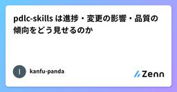
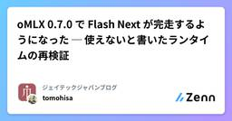
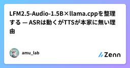
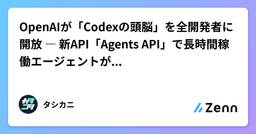

Zennの「大規模言語モデル」のフィード
フィード

GPT-6 は測ってみたらナーフされていなかった件
Zennの「大規模言語モデル」のフィード
1. はじめに自分はQAエンジニアで、普段のテスト設計に生成AIを使っています。9月6日にGPT-6を測りました。凍結した測定セットでCodex側を測るのは6月のGPT-5.5以来なので、1世代ぶんの差になります。その数日後、「GPT-6が弱くなった（ナーフされた）」という話が目に入りました。使っている人たちの体感の報告です。同じ入力をもう一度投げれば、自分の物差しの上で出力が動いたかだけは引ける。9月12日に全部撃ち直しました。前半が1世代差、後半が6日差です。結論を先に。1世代で、動物園の最深部、つまり仕様の離れた箇所を突き合わせないと出てこない観点に届くようになりました。...
13時間前

LangGraph実践入門：自作エージェントから卒業して現場で動くAIエージェントを構築する完全ガイド
Zennの「大規模言語モデル」のフィード
以前、こちらの記事（AIエージェントの仕組みを学ぶ・創る——軽量・透明な制御Harness「lumichy-agent」解説）で、依存関係を極限まで削ぎ落とした自作エージェントフレームワークの設計と実装を紹介しました。スクラッチでループ構造（THINK → ACT → OBSERVE）やツール呼び出しを一から組むと、LLMエージェントが内部で何を考え、どう動いているのか、その「解像度」が一気に上がります。エージェントの基本原理を学ぶアプローチとして、自作以上に適した方法はありません。でも、いざ「実務の現場で安定して動くエージェント」を本番運用しようとした瞬間、容赦ない現実の壁に直面...
15時間前
定期的に確認したい情報をAIにまとめて垂れ流しさせる
Zennの「大規模言語モデル」のフィード
概要LLMは情報の整理が得意だ。特に最近のLLMは、出力形式を指定すると、かなり素直に従ってくれる。こうした用途に使えるのが、OpenAIのDataプラグインだ。社内のデータソースと連携し、情報の分析やレポート作成ができる。これを定期実行と組み合わせれば、社内データの変化に日頃から気づけるようになる。 方法基本的には、データソースから情報を集め、LLMで整理し、Slackに投稿する処理を定期実行するだけだ。ただし、スケジューラーを用意するだけでは完成しない。データソースを読み取るための接続と、Slackへ投稿するための接続も必要になる。 対応方法情報の取得...
17時間前

AIに要約を分業させたら、節約額より確認事項が増えた件
Zennの「大規模言語モデル」のフィード
YouTubeの字幕をClaude Codeで要約し、Obsidian用のノートにする仕組みを使っています。内容をつかんで、「あとで自分でも見るか」を判断するためです。困ったのは、10時間を超える講義動画が入ってきたときでした。字幕だけで50万〜70万字あります。これまでどおりSonnetに全文を読ませると、使用量が大きくなりそうです。この動画はいったん保留して、処理の分担を変えてみることにしました。[1]改善の狙いは次のとおりです。原文を読む作業を、API単価の低いHaikuに任せる。Sonnetには短くした部分要約を渡し、最終ノートにまとめてもらう。「内容をつかんで視聴す...
19時間前

RAGシステム高精度化！評価駆動で品質担保する実践手法
Zennの「大規模言語モデル」のフィード
多くのRAGシステム開発者が直面する問題は、「なんとなく動くが、本当に精度が高いのか分からない」「プロンプトやチャンキングを調整しても、改善したのか客観的に判断できない」といった、品質評価と改善の壁です。特に、ハルシネーションや不適切な回答は、ビジネスへの信頼性低下に直結しかねません。この記事では、RAGシステムを高精度化し、その品質を担保するための評価駆動開発の実践手法を解説します。RAGの精度を客観的に測定する具体的なメトリクスと、LangChain・RAGASを用いた評価パイプラインの構築、そして評価結果に基づいた改善アプローチまでを網羅的にご紹介します。 RAGシステムの精...
20時間前

pdlc-skills は進捗・変更の影響・品質の傾向をどう見せるのか
Zennの「大規模言語モデル」のフィード
!この記事は個人ブログにも掲載しています → https://kanfu-panda.github.io/ja/blog/2026/09/05/pdlc-progress-impact-retro.html前回は品質の鎖について書きました。今回は見えることの話です。AI は午後のあいだに三つの機能を進めます。いまどこまで進んだのか、ここを直すと何に波及するのか、この期間はどうだったのか。それが見えなければ、自動化はブラックボックスの中で回っているのと同じです。pdlc にはこのための道具が三つあります。ステータスラインと /pdlc-status、/pdlc-relate、/p...
1日前

oMLX 0.7.0 で Flash Next が完走するようになった ─ 使えないと書いたランタイムの再検証
Zennの「大規模言語モデル」のフィード
株式会社ジェイテックジャパン CTOの高丘 @tomohisaです。128GB の MacBook Pro で Qwen3.8 Flash Next を動かした記録を 2 本書きました。1 本目が実装タスクを任せた記録、2 本目が 3 つのランタイムを比べたものです。https://zenn.dev/jtechjapan_pub/articles/local-llm-qwen-flash-next-evalhttps://zenn.dev/jtechjapan_pub/articles/qwen-flash-next-runtime-comparison2 本目で、oMLX とい...
1日前

6 ProをWorkのAstraに査読させたら、査読者まで検体になった件
Zennの「大規模言語モデル」のフィード
こんにちは、黒パグです。ChatGPTの通常チャットで、画面上に「6 Pro」と表示されていたモードを試していました。GitHubやGoogle Driveを参照させ、Deep Researchの結果を読ませ、学習モードで問いを出させる。最後に、その記録を記事へまとめるところまで進めました。最初に考えていたタイトルは、こうです。6プロをWorkアストラに査読させたらストロングリジェクトだった件ところが、元の回答とAstraの査読を突き合わせると、その査読にも読み落としがありました。さらに、記事を書き直していた側も、PDFを確認せずにスライド番号を割り当てる事故を起こしました。...
1日前

攻撃側の手法から、AI Native なオペレーションを学ぶ
Zennの「大規模言語モデル」のフィード
Anthropic が2026年9月に出した脅威インテリジェンスレポートに、攻撃者が Claude をどう組み込んでいたかが書かれている。検知されたらマルウェアを書き換えて再配備し、検知されなくなるまで反復するワークフロー。セッションをまたいでターゲット一覧と進行状態を持ち越す作戦。運用者が離れている間も回り続ける13体の収集エージェント、などなど。セキュリティの資料として読むのが本筋だが、ここに記録された作戦を運用設計として読むと、その多くが既存の工程を前提にせず目的から逆算して組まれているように見える。!数字と引用はすべて原文から取っている。事例の帰属も数字も Anthropi...
1日前

56. 統制の請求書は分かれて届く
Zennの「大規模言語モデル」のフィード
!この記事は生成AIで作成した草稿を、筆者が内容を確認し、添削・修正のうえ公開しています。 月額の答えが、ひとつではなかったMicrosoftが2026年5月1日に一般提供を開始した Agent 365 の価格は、日本語の解説記事を10本読むと10本とも「1ユーザーあたり月15ドル」と書いてある。数字自体は正しい。公式の価格ページにそう出ている。ただ、この数字だけを見て予算を組むと外す。理由は3つある。追加購入なしで使える範囲が別に存在する前提として別のライセンスが要る月15ドルは統制の値段であって、エージェントを動かす値段ではないこの3つは並列ではなく、費用の層...
1日前

FableとSol、AstraとOpusをまたいだエージェント連携の設計メモ
Zennの「大規模言語モデル」のフィード
エンジン間にコンテキストの共有はないClaude Fable 5.1とGPT-5.6 Sol、あるいはGPT-6 AstraとClaude Opus 5。異なるベンダーのモデルに役割を分けて連携させるアイデアは理に適っているのですが、最初に立ちはだかるのはひとつの単純な事実です。異なるエンジンのセッション間では、コンテキストが一切引き継がれません。Fableが読んだファイルも、思考過程も、Solには届きません。会話履歴もそのままでは渡せません。この構造は、転院時の診療情報提供書に似ています。紹介先の医師は前医の頭の中を知らないので、経過・判断の根拠・依頼内容を紙の上で完結させる必...
1日前

2026-08-26 今日の技術トレンド
Zennの「大規模言語モデル」のフィード
!大規模言語モデル（LLM）単体の活用から実業務に最適化された「AIエージェント」や具身知能へのシフトが加速しています。富士通の自己進化マルチAIエージェントやWAIC 2026の動向がこれを示唆する一方、ガートナーはLLM頼みの限界も指摘しています。ハードウェア面ではOpenAIがHot Chips 2026で独自ASIC「Jalapeño」を発表。さらにPythonエコシステムでは、OpenAIによるAstral買収を背景にuvやRuffを用いた新たな開発スタックが定着しつつあります。 LLMから「AIエージェント」の実装・課題解決へAI/LLM領域では、単一モデルの性能向...
1日前

Amazon Bedrockの初回利用でAnthropicモデルがAccessDeniedになったときに確認したこと 1
1
Zennの「大規模言語モデル」のフィード
はじめにFusicのレオナです。Amazon Bedrockを初めて利用するAWSアカウントで、Anthropicモデルのユースケース情報を提出し、Claude Sonnet 4.6を呼び出そうとしたところ、次のエラーが発生しました。AccessDeniedException: Model access is denied due to IAM user or service role is not authorizedto perform the required AWS Marketplace actions (aws-marketplace:ViewSubscripti...
1日前

LFM2.5-Audio-1.5B×llama.cppを整理する — ASRは動くがTTSが本家に無い理由
Zennの「大規模言語モデル」のフィード
この記事で分かること「llama.cppが音声モデルに対応した」というポストを見て「もう llama-server で動くのか」と思ったなら、それは半分だけ正解です。LFM2.5-Audio-1.5B は音声認識（ASR）なら実機で動きます。ただし本家 llama.cpp ではなく、Liquid AI が配布する専用ビルドが必要ですテキスト読み上げ（TTS）は本家 llama.cpp にまだ統合されていません。理由は「対応が遅れている」ではなく、llama.cpp側に音声出力の統一的な抽象化層が無いという構造的な問題です名前が似たモデルが3つあり（LFM2-Audio /...
1日前

次トークン予測を「目的関数・文脈内学習・評価」に分解する
Zennの「大規模言語モデル」のフィード
LLMの学習目標を「次のtokenを当てるだけ」と説明すると、質問応答、翻訳、コード生成、few-shot適応との間に大きな飛躍が残ります。重要なのは、目的関数が単純であることと、目的関数を広いdata上で解くための内部計算が単純であることは別だという点です。次tokenの条件付き確率を改善するには、局所的な共起だけでなく、文書内の参照、taskの規則、複数段階の手順を使う方が有利な場面があります。本記事では、自己回帰目的を次の3層へ分解します。何を数値として最適化しているかなぜ文脈からtaskへ適応する挙動につながるか何を測らなければ「賢くなった」と判断できないかdat...
1日前

fugaku /local storage performance のメモ
Zennの「大規模言語モデル」のフィード
12 nodes config で 4kb で計測NodesRanksAggregate IOPSAggregate MiB/sTotal operationsErrors1114,148.5255.27424,78602224,281.6794.85729,05804431,980.72124.92960,25706647,604.11185.951,429,33608857,942.88226.341,739,8170101057,769.78225.661,734,6...
1日前

OpenAIが「Codexの頭脳」を全開発者に開放 ― 新API「Agents API」で長時間稼働エージェントが誰でも作れる時代へ
Zennの「大規模言語モデル」のフィード
リード2026年9月10日、OpenAIは開発者向けに新しいAPI「Agents API」のパブリックベータを公開しました。これは、コーディングエージェント「Codex」を裏側で支えてきた「ハーネス(制御基盤)」――長時間タスクの管理、ツールの効率的な呼び出し、複数エージェントの連携――を、単一のAPI呼び出しで誰でも使えるようにするものです。前日9日には基盤モデル「GPT-6 Astra」も発表されたばかりで、両者を組み合わせることで「実務を丸ごと任せられるAIエージェント」を自社サービスに組み込むハードルが一段下がったことになります。ただしこれはOpenAI自身の発表であり、実...
1日前

法改正をおっかけるのはめんどくさい！なので、毎日AIに追わせるための土台を作ってみた
Zennの「大規模言語モデル」のフィード
「うちの業務ルール、ちゃんと現行法に沿ってる？」を毎月点検してくれるAIエージェントを作ろう、と思い立ったところまではよかったのであります。条文を横目に判定ロジックを書き、動いた、えらい、と喜んだのも束の間、ふと気づくわけです。これ、来年の改正でまた書き直しじゃないか。再来年も。その次も。法律というやつは、こちらの都合などおかまいなしに、平日はほぼ毎日何かが気づかないうちに変わっているのでした。というわけで、ロジックを磨く前に「AIエージェントが自分で現行法を取りに行ける状態」を先に作ってしまえ、と方針転換したのがここでの話題です。デジタル庁のe-Gov法令APIをぺしぺし叩き、日次で...
1日前
【godot-llm-gamebench】SWE-2はEffortによってどのように性能が変わるのか
Zennの「大規模言語モデル」のフィード
本記事は 実装タスクを外注するモデルは何が適切なのか？ミニゲームを実装させるベンチマーク のシリーズです。このベンチマークを読む上での注意点は以下を参照してください。今回は親エージェントを claude-opus-5@max、子エージェント（実装の外注先）を Devin CLI 上の SWE-2 に固定して、SWE-2 の各 effort でどのように性能が変化するのかを詳しく見ます。 今回測った条件親（委譲元）は claude-opus-5@max に固定子は swe-2 の 3 つの effort（medium / high / max）。各条件 3 反復・直列...
1日前

圧縮KVキャッシュを下書きに使い、出力を変えず最大4倍にするVeriCache
Zennの「大規模言語モデル」のフィード
KVキャッシュを圧縮すると、短い応答ならほとんど気づかない。ところが長いコード生成やエージェントのツール呼び出しでは、途中から出力がじわじわ崩れて、最後には別物になる。この「短距離では無害、長距離では致命的」という性質が、KV圧縮を本番に持ち込むときの一番の悩みどころだった。VeriCache という論文（arXiv:2605.17613、2026年5月）は、この問題を真正面から潰そうとするのではなく、発想を裏返して解く。圧縮したキャッシュを「答え」として使うのをやめ、あくまで下書きとして扱い、正解は非圧縮のキャッシュで答え合わせする。結果として、圧縮の速さを保ったまま出力は非圧縮とビ...
2日前